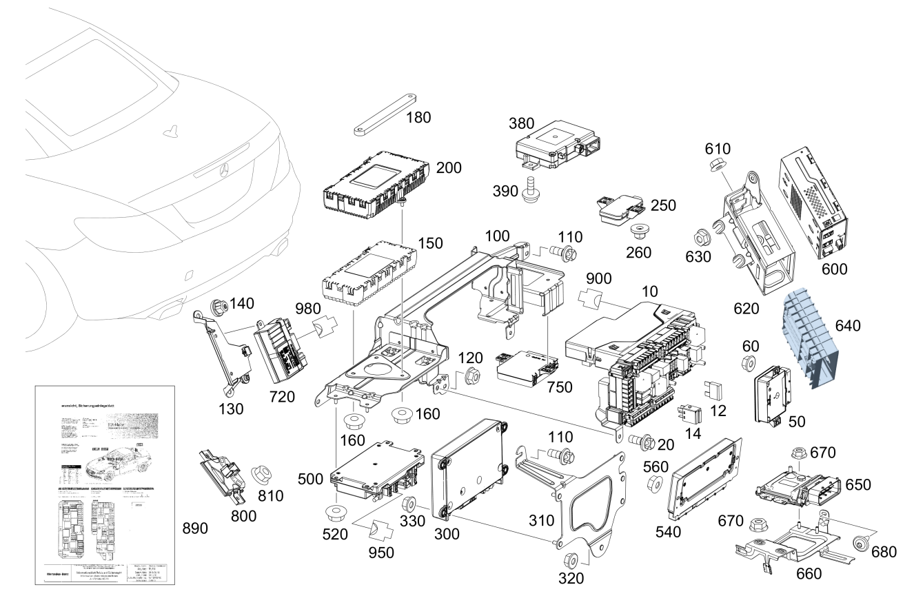

| № | Артикул | Название | Кол. | Примечание | Ограничение |
|---|---|---|---|---|---|
| 10 | A 172 900 26 09 | Блок управления (STEUERGERAET) | 1 | МОД.ОБР.СИГН. И УПР. С МОД.ПРЕДОХР. И РЕЛЕ СЗАДИ N10/2 [672] ДЕТАЛЬ ПОСЛЕ УСТАН.ПРОВЕРИТЬ НА АКТУАЛЬНОСТЬ "ПРОШИВНОГО" ПО | 802/803/804/805/806 |
| 10 | A 172 900 26 11 | Блок управления (STEUERGERAET) | 1 | МОД.ОБР.СИГН. И УПР. С МОД.ПРЕДОХР. И РЕЛЕ СЗАДИ [672] ДЕТАЛЬ ПОСЛЕ УСТАН.ПРОВЕРИТЬ НА АКТУАЛЬНОСТЬ "ПРОШИВНОГО" ПО [697] ДЕТАЛЬ ПОСТАВЛЯЕТСЯ ТОЛЬКО/ИЛИ ТАКЖЕ КАК ЗАП.ЧАСТЬ | 807/808 |
| 10 | A 172 900 06 14 | Блок управления (STEUERGERAET) | 1 | МОД.ОБР.СИГН. И УПР. С МОД.ПРЕДОХР. И РЕЛЕ СЗАДИ [672] ДЕТАЛЬ ПОСЛЕ УСТАН.ПРОВЕРИТЬ НА АКТУАЛЬНОСТЬ "ПРОШИВНОГО" ПО [697] ДЕТАЛЬ ПОСТАВЛЯЕТСЯ ТОЛЬКО/ИЛИ ТАКЖЕ КАК ЗАП.ЧАСТЬ | 808/809/800/801 |
| 10 | A 172 900 06 14 | Блок управления (STEUERGERAET) | 1 | МОД.ОБР.СИГН. И УПР. С МОД.ПРЕДОХР. И РЕЛЕ СЗАДИ [672] ДЕТАЛЬ ПОСЛЕ УСТАН.ПРОВЕРИТЬ НА АКТУАЛЬНОСТЬ "ПРОШИВНОГО" ПО [697] ДЕТАЛЬ ПОСТАВЛЯЕТСЯ ТОЛЬКО/ИЛИ ТАКЖЕ КАК ЗАП.ЧАСТЬ | (808/809)+(494/460/830/835) |
| 12 | N 000000 004215 | - Плавкая вставка (SICHERUNGSEINSATZ) | NB | E\-40 | |
| 12 | N 000000 004216 | - Плавкая вставка (SICHERUNGSEINSATZ) | NB | 50A | |
| 12 | N 000000 004202 | - Плавкая вставка (SICHERUNGSEINSATZ) | NB | C\-5 | |
| 12 | N 000000 004203 | - Плавкая вставка (SICHERUNGSEINSATZ) | NB | C\-7.5 | |
| 12 | N 000000 004205 | - Плавкая вставка (SICHERUNGSEINSATZ) | NB | C\-15 | |
| 12 | N 000000 004206 | - Плавкая вставка (SICHERUNGSEINSATZ) | NB | C\-20 | |
| 12 | N 000000 004208 | - Плавкая вставка (SICHERUNGSEINSATZ) | NB | C\-30 | |
| 14 | A 002 542 11 19 | - Реле | 1 | ГНЕЗДО: A | |
| 14 | A 002 542 13 19 | - Реле | 1 | ГНЕЗДО: B | |
| 14 | A 002 542 26 19 | - Реле (RELAIS) | 1 | ГНЕЗДО: C | |
| 14 | A 002 542 87 19 | - Реле (RELAIS) | 1 | ГНЕЗДО: C | |
| 14 | A 000 982 95 04 | - Реле (RELAIS) | 1 | ГНЕЗДО: C | |
| 14 | A 002 542 88 19 | - Реле (RELAIS) | 1 | ГНЕЗДО: C | |
| 14 | A 000 982 96 04 | - Реле (RELAIS) | 1 | ГНЕЗДО: C | |
| 14 | A 002 542 11 19 | - Реле | 1 | ГНЕЗДО: D | |
| 14 | A 002 542 11 19 | - Реле | 1 | ГНЕЗДО: E | |
| 14 | A 002 542 26 19 | - Реле (RELAIS) | 1 | ГНЕЗДО: F | |
| 14 | A 002 542 87 19 | - Реле (RELAIS) | 1 | ГНЕЗДО: F | |
| 14 | A 000 982 95 04 | - Реле (RELAIS) | 1 | ГНЕЗДО: F | |
| 14 | A 002 542 88 19 | - Реле (RELAIS) | 1 | ГНЕЗДО: F | |
| 14 | A 000 982 96 04 | - Реле (RELAIS) | 1 | ГНЕЗДО: F | |
| 14 | A 002 542 11 19 | - Реле | 1 | ГНЕЗДО: G | |
| 20 | N 910105 006023 | Винт с 6-гранной головкой (SECHSKANTSCHRAUBE) | 1 | КРЕПЛЕНИЕ БУ СЗАДИ; M6X16 | |
| 50 | A 246 900 30 14 | Блок управления (STEUERGERAET) | 1 | ЭЛЕКТРОННЫЙ СТОЯНОЧНЫЙ ТОРМОЗ, В БАГАЖНИКЕ НА ПАНЕЛИ N128 [672] ДЕТАЛЬ ПОСЛЕ УСТАН.ПРОВЕРИТЬ НА АКТУАЛЬНОСТЬ "ПРОШИВНОГО" ПО | 802/803/804/805/806/807+-057 |
| 50 | A 246 900 68 16 | Блок управления (STEUERGERAET) | 1 | ЭЛЕКТРОННЫЙ СТОЯНОЧНЫЙ ТОРМОЗ, В БАГАЖНИКЕ НА ПАНЕЛИ N128 [672] ДЕТАЛЬ ПОСЛЕ УСТАН.ПРОВЕРИТЬ НА АКТУАЛЬНОСТЬ "ПРОШИВНОГО" ПО | 802/803/804/805/806/807+-057 |
| 50 | A 246 900 85 16 | Блок управления (STEUERGERAET) | 1 | ЭЛЕКТРОННЫЙ СТОЯНОЧНЫЙ ТОРМОЗ, В БАГАЖНИКЕ НА ПАНЕЛИ N128 [672] ДЕТАЛЬ ПОСЛЕ УСТАН.ПРОВЕРИТЬ НА АКТУАЛЬНОСТЬ "ПРОШИВНОГО" ПО | 802/803/804/805/806/807+-057 |
| 50 | A 246 900 34 17 | Блок управления (STEUERGERAET) | 1 | ЭЛЕКТРОННЫЙ СТОЯНОЧНЫЙ ТОРМОЗ, В БАГАЖНИКЕ НА ПАНЕЛИ [672] ДЕТАЛЬ ПОСЛЕ УСТАН.ПРОВЕРИТЬ НА АКТУАЛЬНОСТЬ "ПРОШИВНОГО" ПО [697] ДЕТАЛЬ ПОСТАВЛЯЕТСЯ ТОЛЬКО/ИЛИ ТАКЖЕ КАК ЗАП.ЧАСТЬ | 807+057/808/809/800/801 |
| 60 | A 000 990 43 37 | Шестигранная гайка (SECHSKANTMUTTER) | 2 | КРЕПЛЕНИЕ БЛОКА УПРАВЛЕНИЯ; M6 | |
| 100 | A 172 545 00 40 | Держатель (HALTER) | 1 | БУ | |
| 100 | A 172 545 01 40 | Держатель (HALTER) | 1 | БУ | (802/803/804/805)+(536/537/889) |
| 100 | A 172 545 43 40 | Держатель (HALTER) | 1 | БУ | 536/537/889 |
| 100 | A 172 545 09 00 | Держатель (HALTER) | 1 | БУ | (807/808/809/800/801)+(218/360/362/536/537/889) |
| 110 | N 000000 001114 | Винт с 6-гр. глвк (SECHSRUNDSCHRAUBE) | 2 | ДЕРЖАТЕЛЬ НА ПЕРЕГОРОДКЕ; M6X15 | -(536/537/889) |
| 110 | N 000000 001114 | Винт с 6-гр. глвк (SECHSRUNDSCHRAUBE) | 3 | ДЕРЖАТЕЛЬ НА ПЕРЕГОРОДКЕ; M6X15 | 360/362/536/537/889 |
| 120 | A 000 990 43 37 | Шестигранная гайка (SECHSKANTMUTTER) | 2 | ДЕРЖАТЕЛЬ НА ПЕРЕГОРОДКЕ; M6 | |
| 130 | A 172 545 07 40 | Держатель (HALTER) | 1 | УПРАВЛЕНИЕ ЛЮКОМ | |
| 140 | A 000 990 36 62 | Пластмассовая гайка (KUNSTSTOFFMUTTER) | 2 | ДЕРЖ. НА КРЫШКЕ БАКА | |
| 150 | A 212 900 02 29 | Блок управления (STEUERGERAET) | 1 | СПУТНИКОВОЕ РАДИО N87/5 [672] ДЕТАЛЬ ПОСЛЕ УСТАН.ПРОВЕРИТЬ НА АКТУАЛЬНОСТЬ "ПРОШИВНОГО" ПО [697] ДЕТАЛЬ ПОСТАВЛЯЕТСЯ ТОЛЬКО/ИЛИ ТАКЖЕ КАК ЗАП.ЧАСТЬ | (802/803/804/805/806)+536 |
| 160 | N 910112 005000 | Шестигранная гайка (SECHSKANTMUTTER) | 2 | КРЕПЛЕНИЕ БЛОКА УПРАВЛЕНИЯ; M5 | 536 |
| 160 | N 910112 005000 | Шестигранная гайка (SECHSKANTMUTTER) | 3 | КРЕПЛЕНИЕ БЛОКА УПРАВЛЕНИЯ; M5 | 537 |
| 180 | A 172 545 04 00 | Держатель (HALTER) | 1 | (804/805/806)+537+889 | |
| 200 | A 166 900 34 07 | Блок управления (STEUERGERAET) | 1 | DAB\-ТЮНЕР N87/3 [672] ДЕТАЛЬ ПОСЛЕ УСТАН.ПРОВЕРИТЬ НА АКТУАЛЬНОСТЬ "ПРОШИВНОГО" ПО | (802/803/804/805)+537 |
| 200 | A 166 900 95 13 | Блок управления (STEUERGERAET) | 1 | DAB\-ТЮНЕР N87/3 [672] ДЕТАЛЬ ПОСЛЕ УСТАН.ПРОВЕРИТЬ НА АКТУАЛЬНОСТЬ "ПРОШИВНОГО" ПО | (802/803/804/805)+537 |
| 200 | A 166 900 76 16 | Блок управления (STEUERGERAET) | 1 | DAB\-ТЮНЕР N87/3 [672] ДЕТАЛЬ ПОСЛЕ УСТАН.ПРОВЕРИТЬ НА АКТУАЛЬНОСТЬ "ПРОШИВНОГО" ПО [697] ДЕТАЛЬ ПОСТАВЛЯЕТСЯ ТОЛЬКО/ИЛИ ТАКЖЕ КАК ЗАП.ЧАСТЬ [402] БОЛЬШЕ НЕ ПОСТАВЛЯЕТСЯ | (802/803/804/805/806)+537 |
| 250 | A 000 900 37 04 | Блок управления (STEUERGERAET) | 1 | СИСТЕМА КОНТРОЛЯ ДАВЛЕНИЯ ВОЗДУХА В ШИНАХ (RDK) N88 [672] ДЕТАЛЬ ПОСЛЕ УСТАН.ПРОВЕРИТЬ НА АКТУАЛЬНОСТЬ "ПРОШИВНОГО" ПО [697] ДЕТАЛЬ ПОСТАВЛЯЕТСЯ ТОЛЬКО/ИЛИ ТАКЖЕ КАК ЗАП.ЧАСТЬ | (804/805/806/807/808/809/800/801)+475 |
| 250 | A 000 900 06 02 | Блок управления (STEUERGERAET) | 1 | СИСТЕМА КОНТРОЛЯ ДАВЛЕНИЯ ВОЗДУХА В ШИНАХ (RDK) N88 [672] ДЕТАЛЬ ПОСЛЕ УСТАН.ПРОВЕРИТЬ НА АКТУАЛЬНОСТЬ "ПРОШИВНОГО" ПО | (807/808/809/800/801)+475+498 |
| 260 | A 001 990 32 56 | Пружинная гайка (CLIPSMUTTER) | 2 | КРЕПЛЕНИЕ БЛОКА УПРАВЛЕНИЯ; T5 | 475 |
| 300 | A 222 900 60 03 | Блок управления (STEUERGERAET) | 1 | СИСТЕМА АВАРИЙНОГО ВЫЗОВА [672] ДЕТАЛЬ ПОСЛЕ УСТАН.ПРОВЕРИТЬ НА АКТУАЛЬНОСТЬ "ПРОШИВНОГО" ПО [697] ДЕТАЛЬ ПОСТАВЛЯЕТСЯ ТОЛЬКО/ИЛИ ТАКЖЕ КАК ЗАП.ЧАСТЬ | (804/805)+348+(494/460) |
| 300 | A 253 900 44 00 | Блок управления (STEUERGERAET) | 1 | СИСТЕМА АВАРИЙНОГО ВЫЗОВА [672] ДЕТАЛЬ ПОСЛЕ УСТАН.ПРОВЕРИТЬ НА АКТУАЛЬНОСТЬ "ПРОШИВНОГО" ПО [697] ДЕТАЛЬ ПОСТАВЛЯЕТСЯ ТОЛЬКО/ИЛИ ТАКЖЕ КАК ЗАП.ЧАСТЬ | 348+(494/460)+806 |
| 300 | A 253 900 46 00 | Блок управления (STEUERGERAET) | 1 | СИСТЕМА АВАРИЙНОГО ВЫЗОВА [672] ДЕТАЛЬ ПОСЛЕ УСТАН.ПРОВЕРИТЬ НА АКТУАЛЬНОСТЬ "ПРОШИВНОГО" ПО [697] ДЕТАЛЬ ПОСТАВЛЯЕТСЯ ТОЛЬКО/ИЛИ ТАКЖЕ КАК ЗАП.ЧАСТЬ | 348+830+514+806 |
| 300 | A 222 900 48 08 | Блок управления (STEUERGERAET) | 1 | СИСТЕМА АВАРИЙНОГО ВЫЗОВА [672] ДЕТАЛЬ ПОСЛЕ УСТАН.ПРОВЕРИТЬ НА АКТУАЛЬНОСТЬ "ПРОШИВНОГО" ПО | (804/805)+348+830+514 |
| 310 | A 172 545 28 40 | Держатель (HALTER) | 1 | НА РАЗДЕЛИТ. СТЕНКЕ | (804/805/806)+(348/B54) |
| 320 | A 000 990 43 37 | Шестигранная гайка (SECHSKANTMUTTER) | 2 | ДЕРЖАТЕЛЬ НА ПЕРЕГОРОДКЕ; M6 | (804/805/806)+(348/359/B54) |
| 330 | A 000 990 43 37 | Шестигранная гайка (SECHSKANTMUTTER) | 4 | БЛОК УПРАВЛЕНИЯ К КРОНШТЕЙНУ; M6 | (804/805/806)+(348/359) |
| 330 | A 000 990 43 37 | Шестигранная гайка (SECHSKANTMUTTER) | 2 | БЛОК УПРАВЛЕНИЯ К КРОНШТЕЙНУ; M6 | 360/362 |
| 380 | A 242 900 70 01 | Блок управления (STEUERGERAET) | 1 | КОММУНИКАЦИОННЫЙ МОДУЛЬ ТЕЛЕКОММУНИКАЦИОННЫХ СЛУЖБ [672] ДЕТАЛЬ ПОСЛЕ УСТАН.ПРОВЕРИТЬ НА АКТУАЛЬНОСТЬ "ПРОШИВНОГО" ПО [697] ДЕТАЛЬ ПОСТАВЛЯЕТСЯ ТОЛЬКО/ИЛИ ТАКЖЕ КАК ЗАП.ЧАСТЬ | (804+054/805/806)+B54 |
| 390 | A 001 984 64 29 | Болт с головкой торкс (SECHSRUNDSCHRAUBE) | 2 | КРЕПЛЕНИЕ БЛОКА УПРАВЛЕНИЯ; 5X16 | (804/805/806)+B54 |
| 500 | A 172 900 61 06 | Блок управления (STEUERGERAET) | 1 | KEYLESS\-GO, В ЦЕНТРЕ БАГАЖНИКА N69/5 [672] ДЕТАЛЬ ПОСЛЕ УСТАН.ПРОВЕРИТЬ НА АКТУАЛЬНОСТЬ "ПРОШИВНОГО" ПО [697] ДЕТАЛЬ ПОСТАВЛЯЕТСЯ ТОЛЬКО/ИЛИ ТАКЖЕ КАК ЗАП.ЧАСТЬ | 889+-(494/762/763) |
| 500 | A 172 900 62 06 | Блок управления (STEUERGERAET) | 1 | KEYLESS\-GO, В ЦЕНТРЕ БАГАЖНИКА N69/5 [672] ДЕТАЛЬ ПОСЛЕ УСТАН.ПРОВЕРИТЬ НА АКТУАЛЬНОСТЬ "ПРОШИВНОГО" ПО [697] ДЕТАЛЬ ПОСТАВЛЯЕТСЯ ТОЛЬКО/ИЛИ ТАКЖЕ КАК ЗАП.ЧАСТЬ | 889+(494/762/763) |
| 500 | A 212 900 19 29 | Блок управления (STEUERGERAET) | 1 | KEYLESS\-GO, В ЦЕНТРЕ БАГАЖНИКА [672] ДЕТАЛЬ ПОСЛЕ УСТАН.ПРОВЕРИТЬ НА АКТУАЛЬНОСТЬ "ПРОШИВНОГО" ПО | (889/889+(494/762/763))+(806/807/808/809) |
| 500 | A 212 900 87 29 | Блок управления (STEUERGERAET) | 1 | KEYLESS\-GO, В ЦЕНТРЕ БАГАЖНИКА [672] ДЕТАЛЬ ПОСЛЕ УСТАН.ПРОВЕРИТЬ НА АКТУАЛЬНОСТЬ "ПРОШИВНОГО" ПО | (889/889+(494/762/763))+(806/807/808/809) |
| 500 | A 212 900 97 29 | Блок управления (STEUERGERAET) | 1 | KEYLESS\-GO, В ЦЕНТРЕ БАГАЖНИКА [672] ДЕТАЛЬ ПОСЛЕ УСТАН.ПРОВЕРИТЬ НА АКТУАЛЬНОСТЬ "ПРОШИВНОГО" ПО [697] ДЕТАЛЬ ПОСТАВЛЯЕТСЯ ТОЛЬКО/ИЛИ ТАКЖЕ КАК ЗАП.ЧАСТЬ | (889/889+(494/762/763))+(806/807/808/809/800/801) |
| 520 | N 910112 005000 | Шестигранная гайка (SECHSKANTMUTTER) | 4 | БЛОК УПРАВЛЕНИЯ К КРОНШТЕЙНУ; M5 | 889 |
| 520 | A 000 990 43 37 | Шестигранная гайка (SECHSKANTMUTTER) | 2 | БЛОК УПРАВЛЕНИЯ К КРОНШТЕЙНУ; M6 | 889 |
| 540 | A 204 900 64 13 | Блок управления (STEUERGERAET) | 1 | РЕГУЛИРОВКА ДЕМПФИРОВАНИЯ N51/5 [672] ДЕТАЛЬ ПОСЛЕ УСТАН.ПРОВЕРИТЬ НА АКТУАЛЬНОСТЬ "ПРОШИВНОГО" ПО | (804/805)+483 |
| 540 | A 204 900 50 15 | Блок управления (STEUERGERAET) | 1 | РЕГУЛИРОВКА ДЕМПФИРОВАНИЯ N51/5 [672] ДЕТАЛЬ ПОСЛЕ УСТАН.ПРОВЕРИТЬ НА АКТУАЛЬНОСТЬ "ПРОШИВНОГО" ПО | 806+483 |
| 540 | A 231 900 98 07 | Блок управления (STEUERGERAET) | 1 | РЕГУЛИРОВКА ДЕМПФИРОВАНИЯ N51/5 [672] ДЕТАЛЬ ПОСЛЕ УСТАН.ПРОВЕРИТЬ НА АКТУАЛЬНОСТЬ "ПРОШИВНОГО" ПО | 807+483+-M016 |
| 540 | A 231 900 25 08 | Блок управления (STEUERGERAET) | 1 | РЕГУЛИРОВКА ДЕМПФИРОВАНИЯ [672] ДЕТАЛЬ ПОСЛЕ УСТАН.ПРОВЕРИТЬ НА АКТУАЛЬНОСТЬ "ПРОШИВНОГО" ПО [697] ДЕТАЛЬ ПОСТАВЛЯЕТСЯ ТОЛЬКО/ИЛИ ТАКЖЕ КАК ЗАП.ЧАСТЬ | (807+057/808/809/800/801)+483+-M016 |
| 560 | A 000 990 43 37 | Шестигранная гайка (SECHSKANTMUTTER) | 2 | КРЕПЛЕНИЕ БЛОКА УПРАВЛЕНИЯ; M6 | 483 |
| 600 | A 212 900 06 28 | Блок управления (STEUERGERAET) | 1 | ТВ\-ТЮНЕР В БАГАЖ. ОТДЕЛЕН. A90/3 [672] ДЕТАЛЬ ПОСЛЕ УСТАН.ПРОВЕРИТЬ НА АКТУАЛЬНОСТЬ "ПРОШИВНОГО" ПО | (801/802)+498 |
| 600 | A 212 900 81 27 | Блок управления (STEUERGERAET) | 1 | ТВ\-ТЮНЕР В БАГАЖ. ОТДЕЛЕН. [672] ДЕТАЛЬ ПОСЛЕ УСТАН.ПРОВЕРИТЬ НА АКТУАЛЬНОСТЬ "ПРОШИВНОГО" ПО | (804/805/806)+865+835 |
| 600 | A 222 900 30 10 | Блок управления (STEUERGERAET) | 1 | ТВ\-ТЮНЕР В БАГАЖ. ОТДЕЛЕН. [672] ДЕТАЛЬ ПОСЛЕ УСТАН.ПРОВЕРИТЬ НА АКТУАЛЬНОСТЬ "ПРОШИВНОГО" ПО | (807/808/809)+865+835 |
| 600 | A 222 900 84 14 | Блок управления (STEUERGERAET) | 1 | ТВ\-ТЮНЕР В БАГАЖ. ОТДЕЛЕН. [672] ДЕТАЛЬ ПОСЛЕ УСТАН.ПРОВЕРИТЬ НА АКТУАЛЬНОСТЬ "ПРОШИВНОГО" ПО [697] ДЕТАЛЬ ПОСТАВЛЯЕТСЯ ТОЛЬКО/ИЛИ ТАКЖЕ КАК ЗАП.ЧАСТЬ | (807/808/809)+865+835 |
| 600 | A 212 900 00 17 | ТВ-тюнер (TV-TUNER) | 1 | ТВ\-ТЮНЕР В БАГАЖ. ОТДЕЛЕН. [672] ДЕТАЛЬ ПОСЛЕ УСТАН.ПРОВЕРИТЬ НА АКТУАЛЬНОСТЬ "ПРОШИВНОГО" ПО | 803+865+498 |
| 600 | A 212 900 80 27 | Блок управления (STEUERGERAET) | 1 | ТВ\-ТЮНЕР В БАГАЖ. ОТДЕЛЕН. [672] ДЕТАЛЬ ПОСЛЕ УСТАН.ПРОВЕРИТЬ НА АКТУАЛЬНОСТЬ "ПРОШИВНОГО" ПО [697] ДЕТАЛЬ ПОСТАВЛЯЕТСЯ ТОЛЬКО/ИЛИ ТАКЖЕ КАК ЗАП.ЧАСТЬ | (804/805/806)+865+498 |
| 600 | A 222 900 31 10 | Блок управления (STEUERGERAET) | 1 | ТВ\-ТЮНЕР В БАГАЖ. ОТДЕЛЕН. [672] ДЕТАЛЬ ПОСЛЕ УСТАН.ПРОВЕРИТЬ НА АКТУАЛЬНОСТЬ "ПРОШИВНОГО" ПО [697] ДЕТАЛЬ ПОСТАВЛЯЕТСЯ ТОЛЬКО/ИЛИ ТАКЖЕ КАК ЗАП.ЧАСТЬ | (807/808/809)+865+498 |
| 600 | A 222 900 46 13 | Блок управления (STEUERGERAET) | 1 | ТВ\-ТЮНЕР В БАГАЖ. ОТДЕЛЕН. [697] ДЕТАЛЬ ПОСТАВЛЯЕТСЯ ТОЛЬКО/ИЛИ ТАКЖЕ КАК ЗАП.ЧАСТЬ | (807/808/809)+865+498 |
| 600 | A 222 900 50 11 | Блок управления (STEUERGERAET) | 1 | ТВ\-ТЮНЕР В БАГАЖ. ОТДЕЛЕН. [672] ДЕТАЛЬ ПОСЛЕ УСТАН.ПРОВЕРИТЬ НА АКТУАЛЬНОСТЬ "ПРОШИВНОГО" ПО [697] ДЕТАЛЬ ПОСТАВЛЯЕТСЯ ТОЛЬКО/ИЛИ ТАКЖЕ КАК ЗАП.ЧАСТЬ | (807/808/809)+536 |
| 600 | A 222 900 30 15 | Блок управления (STEUERGERAET) | 1 | ТВ\-ТЮНЕР В БАГАЖ. ОТДЕЛЕН. [672] ДЕТАЛЬ ПОСЛЕ УСТАН.ПРОВЕРИТЬ НА АКТУАЛЬНОСТЬ "ПРОШИВНОГО" ПО [402] БОЛЬШЕ НЕ ПОСТАВЛЯЕТСЯ | (807/808/809/800/801)+536 |
| 600 | A 222 900 27 10 | Блок управления (STEUERGERAET) | 1 | ТВ\-ТЮНЕР В БАГАЖ. ОТДЕЛЕН. [672] ДЕТАЛЬ ПОСЛЕ УСТАН.ПРОВЕРИТЬ НА АКТУАЛЬНОСТЬ "ПРОШИВНОГО" ПО | (807/808/809)+537 |
| 600 | A 222 900 92 11 | Блок управления (STEUERGERAET) | 1 | ТВ\-ТЮНЕР В БАГАЖ. ОТДЕЛЕН. [672] ДЕТАЛЬ ПОСЛЕ УСТАН.ПРОВЕРИТЬ НА АКТУАЛЬНОСТЬ "ПРОШИВНОГО" ПО | (807/808/809)+537 |
| 600 | A 222 900 51 17 | Блок управления (STEUERGERAET) | 1 | ТВ\-ТЮНЕР В БАГАЖ. ОТДЕЛЕН. [672] ДЕТАЛЬ ПОСЛЕ УСТАН.ПРОВЕРИТЬ НА АКТУАЛЬНОСТЬ "ПРОШИВНОГО" ПО [697] ДЕТАЛЬ ПОСТАВЛЯЕТСЯ ТОЛЬКО/ИЛИ ТАКЖЕ КАК ЗАП.ЧАСТЬ | (807/808/809/800/801)+537 |
| 600 | A 213 900 93 19 | Блок управления (STEUERGERAET) | 1 | ТВ\-ТЮНЕР В БАГАЖ. ОТДЕЛЕН. [672] ДЕТАЛЬ ПОСЛЕ УСТАН.ПРОВЕРИТЬ НА АКТУАЛЬНОСТЬ "ПРОШИВНОГО" ПО | 865+835+197 |
| 600 | A 213 900 95 20 | Блок управления (STEUERGERAET) | 1 | ТВ\-ТЮНЕР В БАГАЖ. ОТДЕЛЕН. [672] ДЕТАЛЬ ПОСЛЕ УСТАН.ПРОВЕРИТЬ НА АКТУАЛЬНОСТЬ "ПРОШИВНОГО" ПО | 865+835+197 |
| 600 | A 213 900 53 23 | Блок управления (STEUERGERAET) | 1 | ТВ\-ТЮНЕР В БАГАЖ. ОТДЕЛЕН. [672] ДЕТАЛЬ ПОСЛЕ УСТАН.ПРОВЕРИТЬ НА АКТУАЛЬНОСТЬ "ПРОШИВНОГО" ПО [697] ДЕТАЛЬ ПОСТАВЛЯЕТСЯ ТОЛЬКО/ИЛИ ТАКЖЕ КАК ЗАП.ЧАСТЬ | 865+835+197 |
| 610 | N 910112 005000 | Шестигранная гайка (SECHSKANTMUTTER) | 1 | КРЕПЛЕНИЕ БЛОКА УПРАВЛЕНИЯ; M5 | 498/865+835 |
| 620 | A 172 545 20 40 | Держатель (HALTER) | 1 | В ЦЕНТРЕ БАГАЖНИКА, НА ПАНЕЛИ | (802/803/804/805/806)+865 |
| 620 | A 172 545 10 00 | Держатель (HALTER) | 1 | В ЦЕНТРЕ БАГАЖНИКА, НА ПАНЕЛИ | (807/808/809/800/801)+(865/536/537) |
| 630 | A 000 990 43 37 | Шестигранная гайка (SECHSKANTMUTTER) | 3 | КРЕПЛЕНИЕ КРОНШТЕЙНА; M6 | (801/802/803/804/805/806)+865 |
| 630 | A 000 990 43 37 | Шестигранная гайка (SECHSKANTMUTTER) | 3 | КРЕПЛЕНИЕ КРОНШТЕЙНА; M6 | (807/808/809/800/801)+(865/536/537) |
| 640 | A 099 827 03 00 | Держатель (HALTER) | 1 | 865+197 | |
| 650 | A 000 900 26 08 | Блок управления (STEUERGERAET) | 1 | СИСТЕМА НЕЙТРАЛИЗАЦИИ ОГ [672] ДЕТАЛЬ ПОСЛЕ УСТАН.ПРОВЕРИТЬ НА АКТУАЛЬНОСТЬ "ПРОШИВНОГО" ПО | (802/803/804/805/806)+U77 |
| 650 | A 000 900 19 08 | Блок управления (STEUERGERAET) | 1 | СИСТЕМА НЕЙТРАЛИЗАЦИИ ОГ [672] ДЕТАЛЬ ПОСЛЕ УСТАН.ПРОВЕРИТЬ НА АКТУАЛЬНОСТЬ "ПРОШИВНОГО" ПО | (802/803/804/805/806)+U77 |
| 650 | A 000 900 91 09 | Блок управления (STEUERGERAET) | 1 | СИСТЕМА НЕЙТРАЛИЗАЦИИ ОГ [672] ДЕТАЛЬ ПОСЛЕ УСТАН.ПРОВЕРИТЬ НА АКТУАЛЬНОСТЬ "ПРОШИВНОГО" ПО [697] ДЕТАЛЬ ПОСТАВЛЯЕТСЯ ТОЛЬКО/ИЛИ ТАКЖЕ КАК ЗАП.ЧАСТЬ | (802/803/804/805/806)+U77 |
| 650 | A 000 900 19 08 | Блок управления (STEUERGERAET) | 1 | СИСТЕМА НЕЙТРАЛИЗАЦИИ ОГ [672] ДЕТАЛЬ ПОСЛЕ УСТАН.ПРОВЕРИТЬ НА АКТУАЛЬНОСТЬ "ПРОШИВНОГО" ПО | 807+-057+U77 |
| 650 | A 000 900 91 09 | Блок управления (STEUERGERAET) | 1 | СИСТЕМА НЕЙТРАЛИЗАЦИИ ОГ [672] ДЕТАЛЬ ПОСЛЕ УСТАН.ПРОВЕРИТЬ НА АКТУАЛЬНОСТЬ "ПРОШИВНОГО" ПО [697] ДЕТАЛЬ ПОСТАВЛЯЕТСЯ ТОЛЬКО/ИЛИ ТАКЖЕ КАК ЗАП.ЧАСТЬ | 807+-057+U77 |
| 650 | A 000 900 39 09 | Блок управления (STEUERGERAET) | 1 | СИСТЕМА НЕЙТРАЛИЗАЦИИ ОГ [672] ДЕТАЛЬ ПОСЛЕ УСТАН.ПРОВЕРИТЬ НА АКТУАЛЬНОСТЬ "ПРОШИВНОГО" ПО | 807+-057+U77 |
| 650 | A 000 900 71 10 | Блок управления (STEUERGERAET) | 1 | СИСТЕМА НЕЙТРАЛИЗАЦИИ ОГ [672] ДЕТАЛЬ ПОСЛЕ УСТАН.ПРОВЕРИТЬ НА АКТУАЛЬНОСТЬ "ПРОШИВНОГО" ПО | 807+-057+U77 |
| 650 | A 000 900 71 10 | Блок управления (STEUERGERAET) | 1 | СИСТЕМА НЕЙТРАЛИЗАЦИИ ОГ [672] ДЕТАЛЬ ПОСЛЕ УСТАН.ПРОВЕРИТЬ НА АКТУАЛЬНОСТЬ "ПРОШИВНОГО" ПО | 807+057+U77 |
| 650 | A 000 900 32 13 | Блок управления (STEUERGERAET) | 1 | СИСТЕМА НЕЙТРАЛИЗАЦИИ ОГ [672] ДЕТАЛЬ ПОСЛЕ УСТАН.ПРОВЕРИТЬ НА АКТУАЛЬНОСТЬ "ПРОШИВНОГО" ПО [697] ДЕТАЛЬ ПОСТАВЛЯЕТСЯ ТОЛЬКО/ИЛИ ТАКЖЕ КАК ЗАП.ЧАСТЬ | (807+057/808/809/800/801)+U77 |
| 660 | A 172 545 47 40 | Держатель (HALTER) | 1 | НИША ЗАПАСН. КОЛЕСА | (806/807/808/809/800/801)+U77 |
| 670 | N 910112 005000 | Шестигранная гайка (SECHSKANTMUTTER) | 4 | БЛОК УПРАВЛЕНИЯ К КРОНШТЕЙНУ; M5 | U77 |
| 670 | A 000 990 43 37 | Шестигранная гайка (SECHSKANTMUTTER) | 2 | КРЕПЛЕНИЕ КРОНШТЕЙНА; M6 | (806/807/808/809/800/801)+U77 |
| 680 | N 000000 003251 | Винт с 6-гр. глвк (SECHSRUNDSCHRAUBE) | 1 | КРЕПЛЕНИЕ КРОНШТЕЙНА; M5X12 | (806/807/808/809/800/801)+U77 |
| 720 | A 000 900 31 01 | Блок управления (STEUERGERAET) | 1 | ТОПЛИВНЫЙ N118; TDS [672] ДЕТАЛЬ ПОСЛЕ УСТАН.ПРОВЕРИТЬ НА АКТУАЛЬНОСТЬ "ПРОШИВНОГО" ПО [697] ДЕТАЛЬ ПОСТАВЛЯЕТСЯ ТОЛЬКО/ИЛИ ТАКЖЕ КАК ЗАП.ЧАСТЬ | M651 |
| 750 | A 172 900 03 02 | Блок управления (STEUERGERAET) | 1 | СИСТЕМА PARKTRONIC N62 [672] ДЕТАЛЬ ПОСЛЕ УСТАН.ПРОВЕРИТЬ НА АКТУАЛЬНОСТЬ "ПРОШИВНОГО" ПО [697] ДЕТАЛЬ ПОСТАВЛЯЕТСЯ ТОЛЬКО/ИЛИ ТАКЖЕ КАК ЗАП.ЧАСТЬ | (802/803/804/805/806)+230+-M152 |
| 750 | A 172 900 31 06 | Блок управления (STEUERGERAET) | 1 | СИСТЕМА PARKTRONIC N62 [672] ДЕТАЛЬ ПОСЛЕ УСТАН.ПРОВЕРИТЬ НА АКТУАЛЬНОСТЬ "ПРОШИВНОГО" ПО | (807/808/809/800/801)+230+-M152 |
| 800 | A 117 900 60 00 | Блок управления (STEUERGERAET) | 1 | КАМЕРА ЗАДНЕГО ХОДА [672] ДЕТАЛЬ ПОСЛЕ УСТАН.ПРОВЕРИТЬ НА АКТУАЛЬНОСТЬ "ПРОШИВНОГО" ПО | 807+218 |
| 800 | A 117 900 91 01 | Блок управления (STEUERGERAET) | 1 | КАМЕРА ЗАДНЕГО ХОДА [672] ДЕТАЛЬ ПОСЛЕ УСТАН.ПРОВЕРИТЬ НА АКТУАЛЬНОСТЬ "ПРОШИВНОГО" ПО | (807/808/809/800/801)+218 |
| 800 | A 117 900 89 02 | Блок управления (STEUERGERAET) | 1 | Камера заднего вида [672] ДЕТАЛЬ ПОСЛЕ УСТАН.ПРОВЕРИТЬ НА АКТУАЛЬНОСТЬ "ПРОШИВНОГО" ПО | (807/808/809/800/801)+218 |
| 810 | A 000 990 43 37 | Шестигранная гайка (SECHSKANTMUTTER) | 2 | КРЕПЛЕНИЕ БЛОКА УПРАВЛЕНИЯ; M6 | (807/808/809/800/801)+218 |
| 890 | A 172 584 05 00 | Инф. лист реле и предохр. (INFO.BLATT REL. U SICHER.) | 1 | РЕЛЕ И ГНЕЗДО ПРЕДОХРАНИТ. | 804/805 |
| 890 | A 172 584 85 00 | Инф. лист реле и предохр. (INFO.BLATT REL. U SICHER.) | 1 | РЕЛЕ И ГНЕЗДО ПРЕДОХРАНИТ. | 806 |
| 890 | A 172 584 43 01 | Инф. лист реле и предохр. (INFO.BLATT REL. U SICHER.) | 1 | РЕЛЕ И ГНЕЗДО ПРЕДОХРАНИТ. | 807/808/809/800/801 |
| 900 | A 001 545 49 40 | Корпус штекера (STECKERGEHAEUSE) | 1 | БЛОК УПРАВЛЕНИЯ SAM/SRB, ЧЁРНЫЙ N10/2*5H; 28\-PIN MQS | |
| 900 | A 002 545 58 83 | Колпачок (KAPPE) | 1 | С РЫЧАГОМ N10/2*5H | |
| 900 | A 000 545 91 03 | Крышка (DECKEL) | 1 | ДЛЯ КОРПУСА ШТЕКЕРА N10/2*5H | |
| 950 | A 007 540 36 81 | Корпус разъема (BUCHSENGEHAEUSE) | 1 | БУ KEYLESS\-GO N69/5*1; 10\-PIN MQS, SLK2.8 | 889 |
| 950 | A 007 540 27 81 | Сцепление, механическое (KUPPLUNG, MECHANISCH) | 1 | БУ KEYLESS\-GO N69/5*3; 10\-PIN MQS | 889 |
| 950 | A 007 540 28 81 | Сцепление, механическое (KUPPLUNG, MECHANISCH) | 1 | БУ KEYLESS\-GO N69/5*4; 10\-PIN MQS | 889 |
| 980 | A 220 545 39 28 | Корпус штекерной втулки (STECKHUELSENGEHAEUSE) | 1 | БЛОК УПРАВЛЕНИЯ ТОПЛИВНОГО НАСОСА N118/3*1B; 4\-PIN SLK2.8 | |
| 980 | A 002 540 75 81 | Розетка (STECKDOSE) | 1 | БЛОК УПРАВЛЕНИЯ ТОПЛИВНОГО НАСОСА N118/3*2B; 8\-PIN MQS |
Позиций: 126 · подписано на схемах: 126 · колесо — плавный зум в курсор, перетаскивание — пан, двойной клик — зум, клик по артикулу — скопировать · наведите на строку или цифру на схеме — подсветка связки, клик — закрепить.